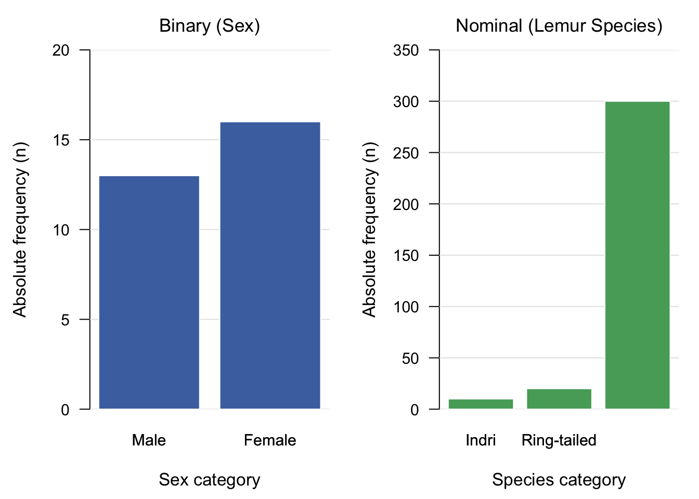
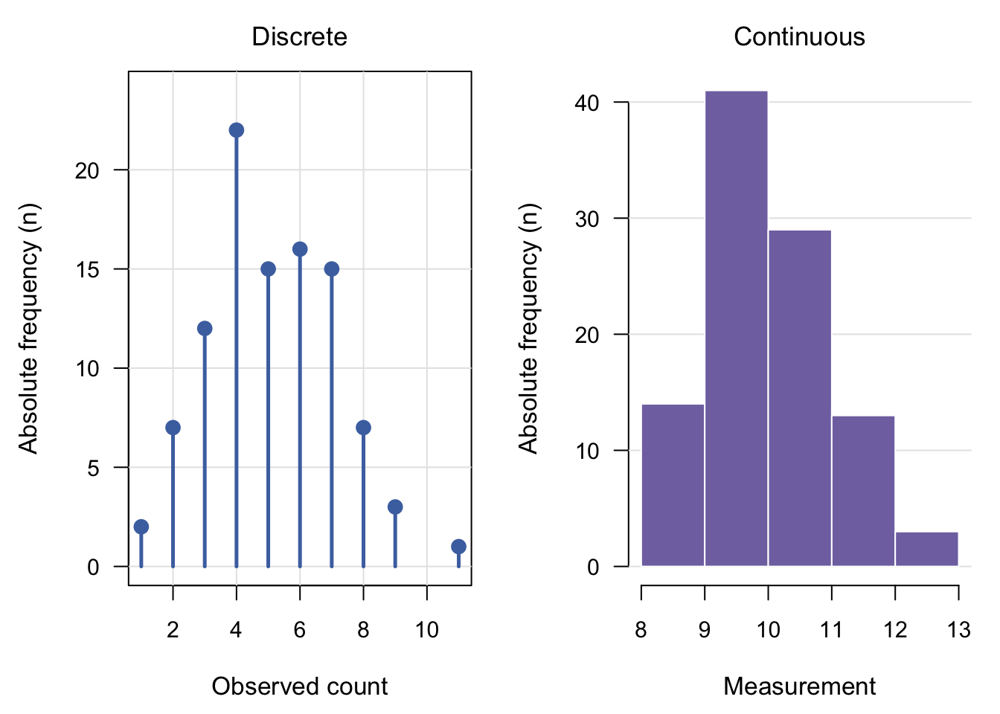
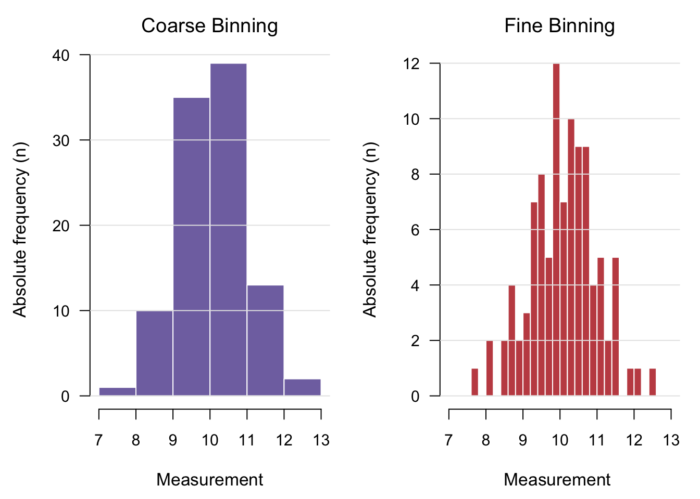
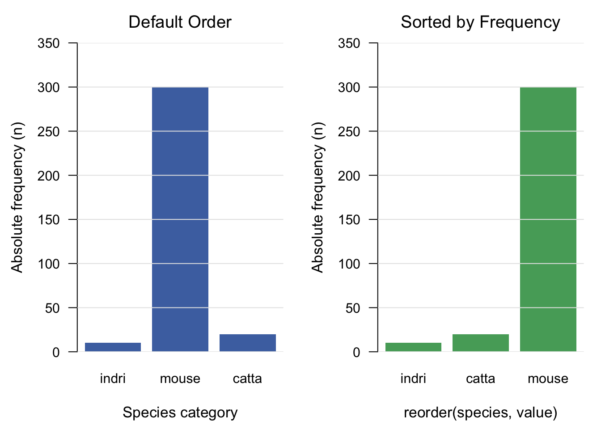
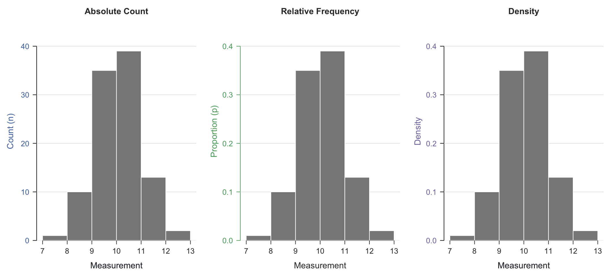

19 Distribution
Rehefa sary mazava kokoa
There are two main entry points for understanding a statistical distribution. The first is theoretical, involving formal parametric distributions such as the Gaussian (Normal), Binomial, or Poisson distributions. That theoretical perspective will be deferred again to the next version.
The second entry point, descriptive statistics, is empirical or data-driven. Consider a qualitative variable (Chapter 18)—for example, observing the sex of all \(n\) students in a classroom (where the variable \(X\) maps a population \(\Omega\) to a state space \(\mathcal{V}\), see Chapter 16 and Chapter 15). The raw data is simply a sequence of observations (e.g., male, female, female, male…). A distribution serves as the primary tool for summarizing this raw data by calculating summary metrics from the original observations.
To construct this summary for qualitative variable, one counts the frequency of observations in each category. The raw sequence of categories is thereby transformed into a frequency table:
| Category | Male | Female |
|---|---|---|
| Frequency | \(n_m\) | \(n_f\) |
Visually, this categorical distribution is represented as a bar plot featuring two bars whose heights correspond to \(n_m\) and \(n_f\).
While this process is straightforward for qualitative data, a question arises: how does one construct a tabular data and visual distribution for continuous quantitative variables (Chapter 17)? If student heights are also measured, the result is a sequence of \(n\) real numbers. If one attempts to tabulate frequencies by unique numerical values, the resulting table becomes an unwieldy set of single-instance counts, yielding a plot of uniformly thin bars with a height of 1—offering little to no analytical insight.
To meaningfully visualize such a continuous sequence, the quantitative values are binned into an ordinal qualitative variable. Similar to grouping continuous altitude measurements into elevation zones, binning continuous data reduces the number of table columns to a manageable set of intervals (bins) with meaningful count frequencies.
However, interval selection is inherently subjective. The resulting empirical distribution and its corresponding table depend directly on the chosen bin boundaries. For instance, if exam scores range continuously from 0 to 20, one could define two broad intervals—\([0, 10)\)1 and \([10, 20]\)—or divide the domain into four equal intervals: \([0, 5)\), \([5, 10)\), \([10, 15)\), and \([15, 20]\). Because different binning choices alter the visual profile of the distribution, the rationale behind the chosen interval widths must always be explicitly stated.
In summary, while a variable consists of an observed sequence of values, its empirical distribution transforms that sequence into paired discrete bins and corresponding frequency counts. Visualizing these counts (Chapter 9) reveals not only the most and least frequent values, but also the overall density and dispersion of the entire dataset.
Formal
A distribution is a tabular or visual summary of a variable’s observed values—whether recorded as a sequence of numbers or discrete categories—constructed by counting the frequency of occurrences across the data (see Chapter 9 for the equivalence between pairs of number and the visual representations).
By mapping raw observations to their respective counts or proportions, a distribution converts unstructured sequence data into a structured format.
An empirical frequency distribution can be formalized either through a binned domain (partitioned intervals) or directly over individual observed values.
Read this first2
Pointwise Definition (Value-Based)
The empirical frequency distribution can be defined directly on individual observed values.
For any unique value \(x \in \Omega\), the absolute empirical frequency function \(n(x)\) and relative empirical frequency function \(f(x)\) are given by:
\[n(x) = \sum_{i=1}^n \mathbb{I}(x_i = x) \quad \text{and} \quad f(x) = \frac{n(x)}{n}\]
In operational terms, \(n(x)\) counts the exact number of occurrences of the specific outcome \(x\), while \(f(x)\) represents the proportion of the total sample equal to \(x\).
Binned Definition (Interval-Based)
Let \(\{B_j\}_{j=1}^K\) be an ordered partition of the observed sample domain into \(K\) mutually disjoint bins:
\[B_j \cap B_k = \emptyset \quad \forall \, j \neq k\]
where the bins respect a strict linear ordering: if \(j < k\), then \(x < y\) for all \(x \in B_j\) and \(y \in B_k\).
For any bin index \(j \in \{1, 2, \dots, K\}\), the absolute frequency \(n(B_j)\) and relative frequency \(f(B_j)\) are defined respectively as:
\[n(B_j) = \sum_{i=1}^n \mathbb{I}(x_i \in B_j) \quad \text{and} \quad f(B_j) = \frac{n(B_j)}{n}\]
where \(\mathbb{I}(\cdot)\) is the indicator function evaluating to \(1\) if the condition holds and \(0\) otherwise, and \(n\) represents the total sample size.
Fundamental Property
An immediate mathematical consequence of these definitions is normalization: summing all relative frequencies across the domain equals unity:
\[\sum_{j=1}^K f(B_j) = 1 \quad \text{and} \quad \sum_{x \in \mathbb{R}} f(x) = 1\]
Examples
To focus directly on the geometric representation of empirical distributions, the the sequence vectors and summary tables are omitted.
The first figure illustrates distributions for qualitative variables. For nominal qualitative variables, the ordering of categories along the horizontal axis is arbitrary; reordering the categories (e.g., placing species in ascending or descending frequency order) alters the visual layout but leaves the underlying empirical distribution unchanged.
The second set of figures illustrates distributions for quantitative variables. The first plot displays a discrete quantitative variable where count frequencies are pinned to distinct integer values using a lollipop plot. The second demonstrate continuous quantitative data summarized via histograms.

The figure below illustrates the impact of bin width selection on continuous quantitative distributions. Comparing the two histograms demonstrates how interval size alters visualization: a coarse bin width (\(\Delta x = 1.0\)) smooths over local variation to highlight overall shape, whereas a finer bin width (\(\Delta x = 0.2\)) reveals finer structural details and sampling noise.

Tips and warnings
Bar charts vs. histograms: A bar chart is strictly designed for qualitative (categorical) variables, where discrete categories are visually separated by spaces to emphasize their independence and non-continuous nature. In contrast, a histogram is reserved for continuous quantitative variables, where adjacent bars touch to represent contiguous numerical intervals (bins). Bin selection in a histogram explicitly defines the width and boundaries of these intervals, directly shaping how continuous data is discretized for visualization.
For nominal qualitative variables, category order along the horizontal axis is arbitrary, unless the variable is ordinal. A standard practice for nominal data is to sort categories by frequency (ascending or descending). This reordering significantly improves visual interpretation by making relative rank and magnitude differences instantly clear.

- The vertical axis of an empirical distribution can be scaled in multiple ways depending on the analytical goal. Common y-axis representations include absolute counts, relative counts (proportions), and probability density (where the total area of the bars equals 1). Selecting an appropriate vertical scaling depends primarily on the context of interpretation: for instance, when comparing distributions across groups with unequal sample sizes (n), relative frequencies or probability densities provide a common baseline that raw absolute counts fail to offer.

- Smooth curves—such are also used to represent empirical data-driven distributions. Constructing these continuous representations requires additional analytical machinery, such as kernel selection and bandwidth optimization. While smooth density curves provide an intuitive and aesthetically pleasing overview of continuous data, they can easily mislead if over-smoothed, masking true multimodal patterns or obscuring local variation in small samples.
- The concept of a distribution is the fundamental cornerstone of statistics, bridging theoretical probability and empirical data analysis.